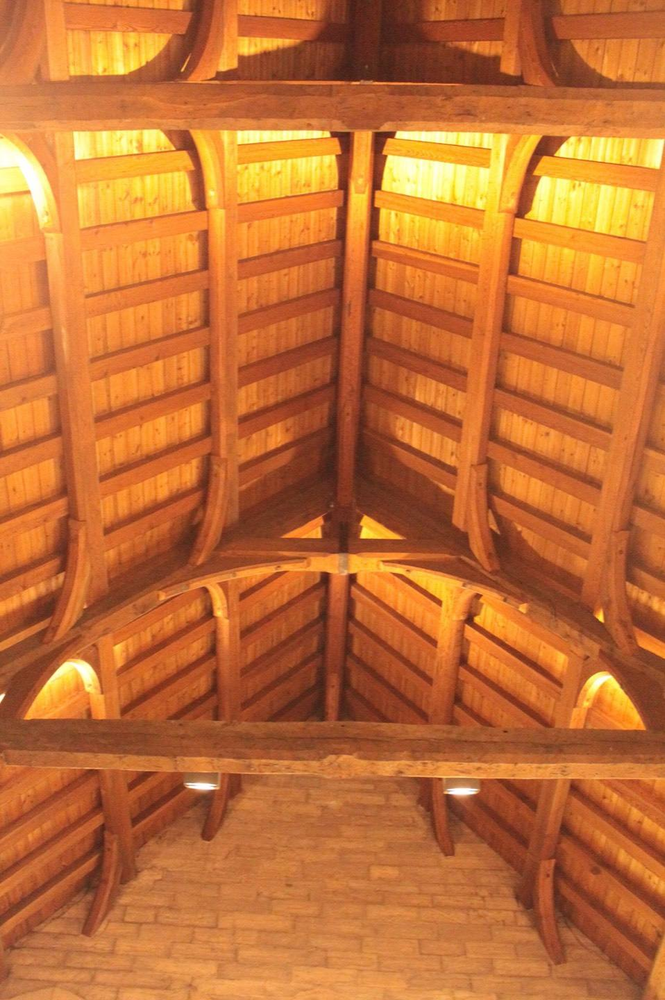
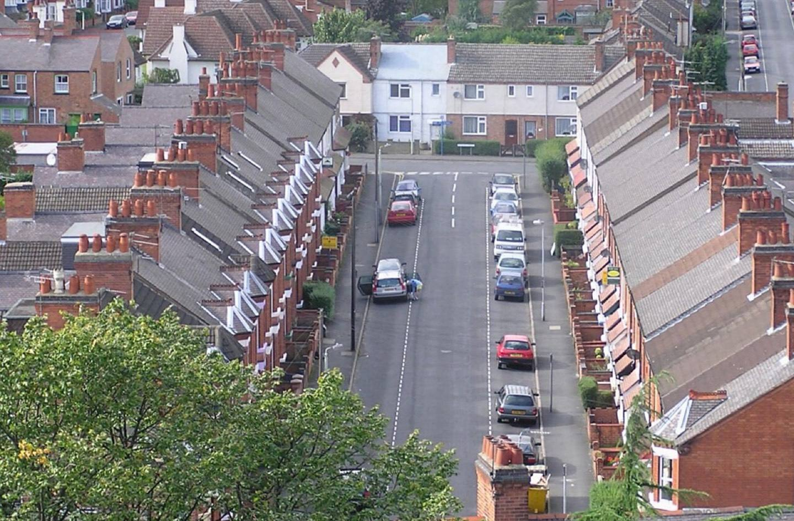
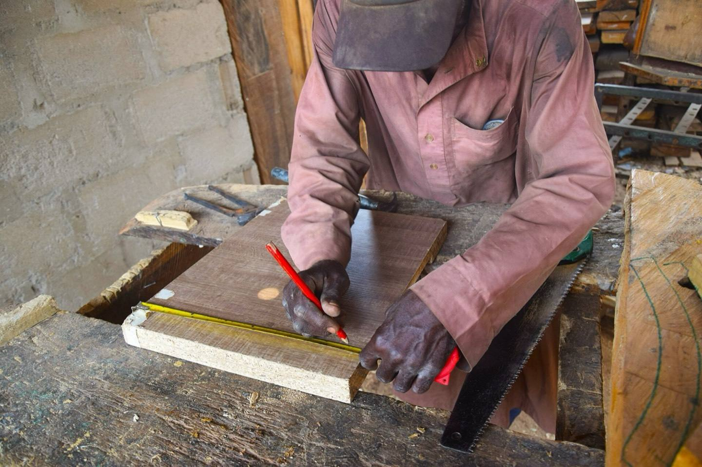

Timber frames for schools and housing
Structural engineers in Glasgow, for architects and developers.

Housing
Flats and houses, framed in timber from the ground up.
Send a housing scheme
140 projects since 2009, drawn in Glasgow.

Send us your drawings
Tell us the building and attach what you have.